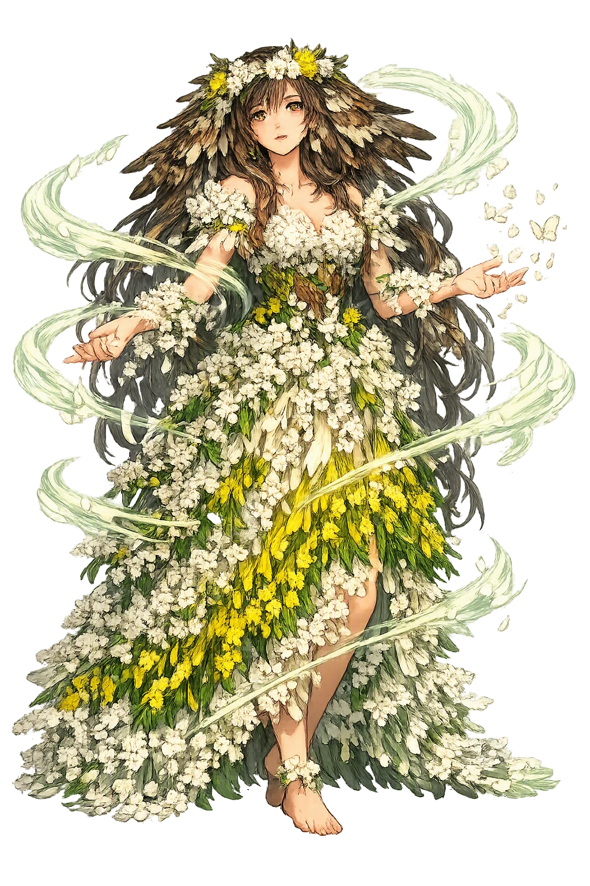
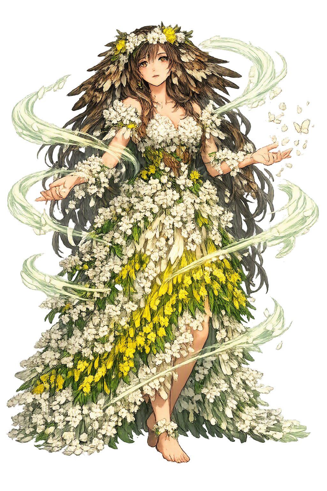

Unicode restoration and ASCII comparison
Blodeuwedd
The name survives in scholarly transliteration. Blodeuwedd is the standard Celtic romanisation, documented in academic sources — “Flower face”. Because the spelling uses only Latin letters, the form is the same in both ASCII and Unicode.
No indigenous writing system is securely attested for individual celtic names. The form shown is a modern scholarly transliteration.
blodeuwedd
The plain blodeuwedd form is identical to the Unicode restoration. Because this name is already written in Latin letters, no diacritics, stress, or script information were lost — only capitalization differs.
Blodeuwedd
The Unicode restoration does not need to recover lost marks for Blodeuwedd. Its value is canonical spelling and consistent cataloguing, not the reconstruction of erased orthography. The domain is readable as-is to both DNS and humanity.
Blodeuwedd.com → blodeuwedd.com
The non-ASCII characters in Blodeuwedd are encoded while the ASCII remains visible. To the DNS, it is Punycode. To humanity, it is Blodeuwedd.
How Blodeuwedd is preserved in writing
No indigenous writing system is securely attested for individual celtic names. The form shown is a modern scholarly transliteration.
Contribute scholarly provenance →Owned, ideal, and ASCII forms of Blodeuwedd
Blodeuwedd
The full Unicode restoration. blodeuwedd.com is not in the PuniCodex collection — it is watched for release; if it drops, this temple upgrades to an owned flagship.
How Blodeuwedd was spoken
The domain of Blodeuwedd
In the celtic tradition, Blodeuwedd is the flower-bride of the Fourth Branch of the Mabinogi: the fairest woman ever seen, made by [[gwydion|Gwydion]] and [[math|Math]] from the blossoms of oak, broom, and meadowsweet to defeat the destiny that barred Lleu Llaw Gyffes from every wife on earth — and the bride who loved Gronw Pebr of Penllyn, drew her husband's death-secret out of him, and was judged into the shape of the owl.
The three blossoms Math and Gwydion took up with their wands and fashioned into the fairest woman anyone had seen — a wife made by craft for the man no earthly wife was allowed.
Neither in a house nor out of one, neither on horseback nor on foot — the death-terms Blodeuwedd drew from Lleu for Gronw: one foot on a cauldron's rim, one on a goat, a spear a year in the forging.
Gwydion's sentence — 'I will not kill you': the bird-shape hated by all birds, never to show its face by day, and the name Blodeuwedd kept as the mark of shame.
The Lake of the Maidens, where Blodeuwedd's attendants, looking backward as they fled through the mountains by night, walked into the water and drowned.
Stories of Blodeuwedd
Blodeuwedd exists in exactly one witness, and it is enough: the Fourth Branch of the Mabinogi, 'Math uab Mathonwy', the masterpiece of medieval Welsh prose. She enters the tale as its most beautiful artefact and leaves it as its most haunting sentence — a woman made from flowers, a bride who chose her own lover, and an owl that still bears her name in modern Welsh.
When Arianrhod, shamed by the birth the wand had forced from her, laid her third destiny on her son — that he should never have a wife of any race then on earth — Math the king took counsel with [[gwydion|Gwydion]]: 'Let us try, by charms and enchantment, to conjure a wife for him out of flowers.' They took the flowers of the oak, the flowers of the broom, and the flowers of the meadowsweet, and from them made the fairest and most beautiful woman anyone had ever seen; they baptized her in the manner of the time, and named her Blodeuwedd, Flower-face.
The wedding sealed the counter-spell: Lleu was given the cantref of Dinoding to rule, and the pair settled at his court in Ardudwy, at the place called Mur Castell. The Fourth Branch gives the marriage one sentence of happiness — everyone was content — before it sets the trap the whole tale has been building toward: a king's nephew with a destiny, and a wife who was never born of woman at all.
Lleu went to Caer Dathyl to visit Math, and while he was away Gronw Pebr, the lord of Penllyn, came hunting into the country. At nightfall Blodeuwedd welcomed the hunter into the court — the hospitality owed to a guest — and the tale says simply that that night they talked, and she conceived a love for him, and he for her. Three nights they lay together while her husband sat at his uncle's court.
The Fourth Branch wastes no breath condemning them; it reports desire with the same flat care it gives to flower-making. But the lovers' question is the tale's hinge: how can they be together for good? Blodeuwedd's answer is to learn what only a wife can learn — the manner of her husband's death — and the text lets her do it in his own trust, 'in the guise of concern', asking how a man so strangely fated could ever be killed.
Lleu, trusting, told her everything. He cannot be killed indoors or out of doors, on horseback or on foot. He can be killed only in one posture: a bath prepared on the bank of a river, a thatched frame over the tub, one foot on the rim of the cauldron and the other on the back of a billy-goat — and only by a spear worked for a full year, and only during the hours of Mass on Sundays. Blodeuwedd sent every word to Gronw, and Gronw set the smiths to work.
When the year was out she asked her husband to show her the marvellous stance — she would never understand it, she said, unless she saw it. The bath was drawn, the frame thatched, the goat brought; Lleu set one foot on the cauldron's rim and one on the goat, and Gronw rose from the hill called Bryn Cyfergyr and cast the spear. It struck Lleu in the side so the shaft stood out of him and the head stayed in, and with a terrible scream he flew up in the shape of an eagle and was gone. Gronw took the lands, and the flower-bride's making came to its harvest.
When Math and Gwydion came against Gronw, Blodeuwedd heard of it and fled with her maidens into the mountains. But fear made them walk backward, looking always behind them for the pursuit, until the whole company walked into a lake and drowned — all of them except Blodeuwedd herself. The tale names the place for them: Llyn y Morwynion, the Lake of the Maidens.
Gwydion overtook her in the mountains and took her. The image the Fourth Branch leaves is among the coldest in Welsh literature: the made woman fleeing through the dark with her dead companions behind her under the water, caught at last not by a warrior but by the enchanter who had fashioned her out of blossoms three years — or one lifetime — before.
Gwydion's judgement is the Fourth Branch's second great transformation-sentence, and it is precise: 'I will not kill you; I will do what is worse. I will let you go in the shape of a bird. Because of the dishonour you have done Lleu Llaw Gyffes, you shall never dare show your face in the light of day, and that shall be from fear of all birds: they shall mob you and molest you wherever they find you. And you shall not lose your name, but shall always be called Blodeuwedd.' She went, in the shape of the owl. The tale adds its own etiology: blodeuwedd is what the owl is called to this day, and for that reason the birds hate the owl wherever it is found.
The aftermath belongs to the slain man's healing and the standing stone: Lleu, nursed back from eagle-shape and skin and bone, demanded to stand where Gronw had stood; Gronw took the stone slab between himself and the spear, and Lleu's cast drove through the slab and through him. The pierced stone on the bank of the Cynfael was called Llech Ronw, Gronw's stone. Blodeuwedd alone of the tale's dead is not buried — she is still flying, under her flower-name, in every Welsh word for owl.
Blodeuwedd is the Mabinogi's argument about what making means. Math and Gwydion make a woman the way they make illusions — by craft, for a purpose, to defeat a destiny — and the Fourth Branch's quiet question is what a made thing owes its makers. She has no mother, no father, no childhood, no choice in her marriage; she is given beauty, a name, a husband, and a court, and the tale watches, without comment, as the one thing she chooses for herself is a man and a murder. Gwydion's sentence is exact in its cruelty: not death, which would end her, but the kept name — Flower-face worn forever on the face of the night-bird every other bird hates. The punishment preserves her even as it damns her. Seven centuries later the word for owl in Welsh is still her name: the flowers never stopped blooming in it, and the shame never left it either.
Enter Extended Lore